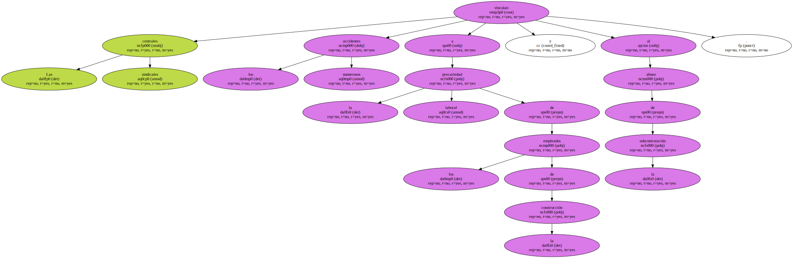

1,2 millones de trabajadores han sido convocados por UGT y CCOO para protestar contra la alta siniestralidad en el sector , que creció el 11,7% el 2000.

Las centrales sindicales vinculan los numerosos accidentes a la precariedad laboral de los empleados de la construcción y al abuso de la subcontratación.
